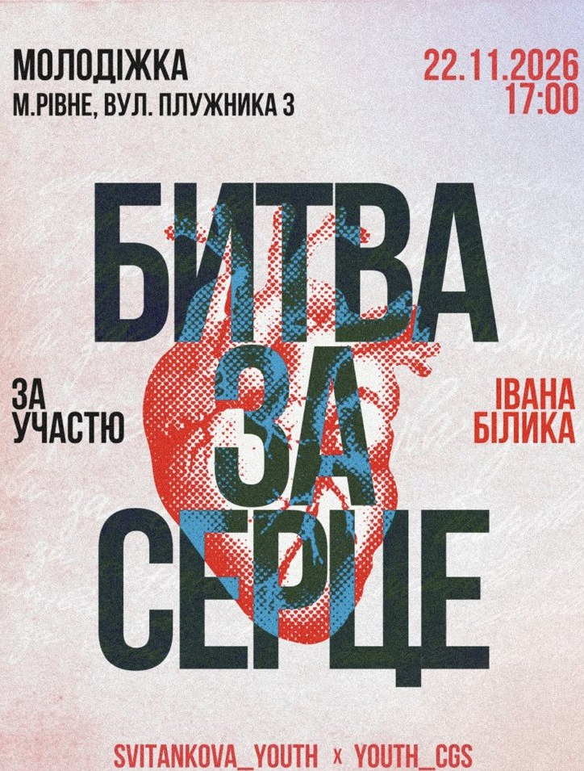
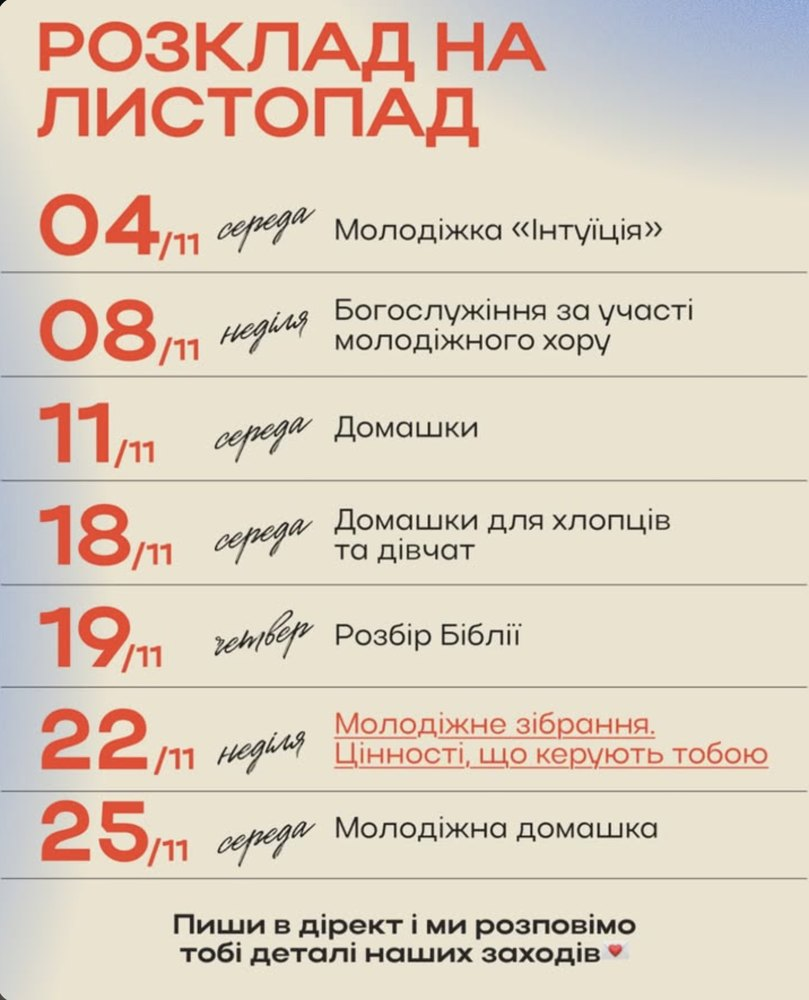
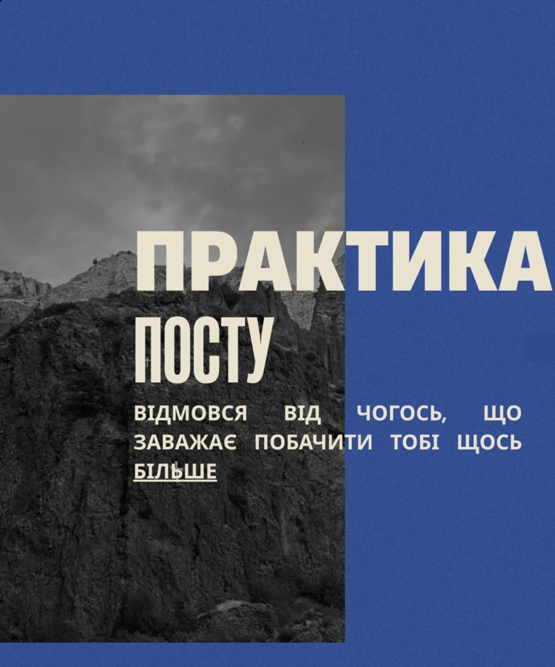

22.11 · 17:00

Битва за серце
Молодіжне зібрання за участю Івана Біліка — разом зі svitankova_youth.
Рівне, з любов’ю
Церква Божого Спасіння — спільнота, куди можна прийти таким, яким ти є: з питаннями, втомою чи радістю. Двері відчинені для кожного.

Напиши нам — підкажемо, як дістатися і з ким познайомитись.
зберігай —
знадобиться!
не можеш прийти?
Двері відчинені для всіх. Приходь на будь-яке зібрання — тебе щиро чекають.

розклад на місяць —
у нашому Instagram

Молодіжне зібрання за участю Івана Біліка — разом зі svitankova_youth.

Час зупинитися від буденності й відкрити серце для Божої присутності.
Поради, як знайти свою спільноту, коли переїхав на навчання.
Не хвилюйся — тут усі колись були новенькими. Ось як усе виглядає.
Богослужіння щонеділі о [ЧАС]. Дрес-коду немає — приходь як зручно.
Напиши нам у соцмережах заздалегідь — зустрінемо й підкажемо, де сісти.
Домашні групи по середах — найкращий спосіб стати своїм.
Ні. Просто приходь. Якщо маєш Біблію — візьми, але це не обов’язково.
Звісно. Більшість людей колись прийшли вперше саме так. Двері відчинені для всіх.
[ТРИВАЛІСТЬ] — пісні прославлення, проповідь і спільна молитва.
Поговори з пастором після будь-якого служіння — він розповість про наступні кроки.
тут є справа
для кожного
для дітей і батьків
Поки дорослі на богослужінні, діти в безпечному й радісному місці вивчають Біблію, співають, моляться і знаходять друзів.
календар
молитовні потреби
Напиши, за що помолитися. Якщо побажаєш, прохання прочитає лише пастор.
Дякуємо, що довірився. Ми молимося за тебе.
Трансляції, новини церкви і життя молоді — підписуйся, щоб нічого не пропустити.